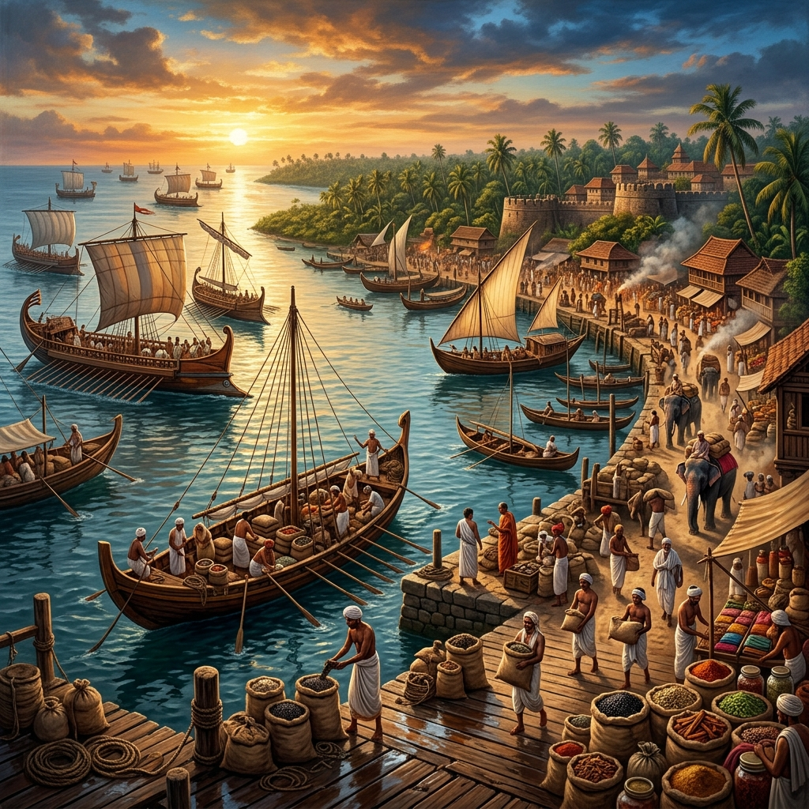

Trade network
Muziris, Tyndis and other coastal centres connected Chera lands with Roman Egypt, Arabia, Sri Lanka and Southeast Asia. Pepper, pearls, ivory and textiles travelled west; gold, wine and glass arrived by sea.
A journey through the ancient Tamil polity whose western ports connected pepper country with the Indian Ocean.
The Cheras ruled parts of present-day Kerala and western Tamil Nadu across several phases, from the early historic period to the later Chera Perumal era. Their territory linked fertile river valleys, mountain passes and Malabar ports.
Muziris, Tyndis and other coastal centres connected Chera lands with Roman Egypt, Arabia, Sri Lanka and Southeast Asia. Pepper, pearls, ivory and textiles travelled west; gold, wine and glass arrived by sea.
Sangam poetry preserves memories of Chera kings, bards and battlefields. Tamil and Malayalam literary traditions, temple patronage and the region's mixed coastal communities reflect a long cultural legacy.
Remembered in Sangam tradition as an early Chera ruler.
The celebrated “Red Chera,” associated with the Pattini tradition.
A later Chera Perumal ruler linked to Mahodayapuram's political world.
